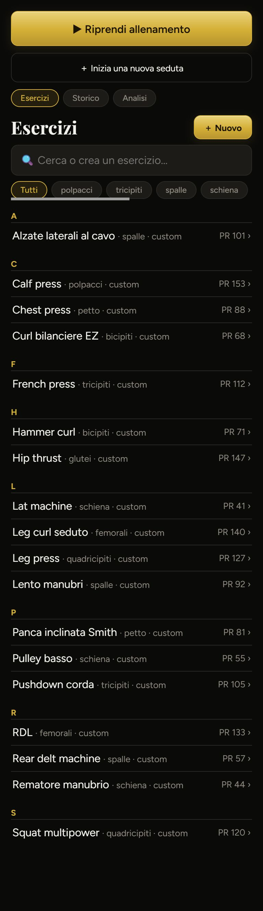
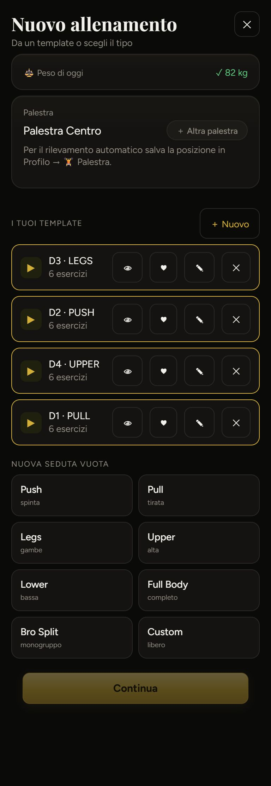
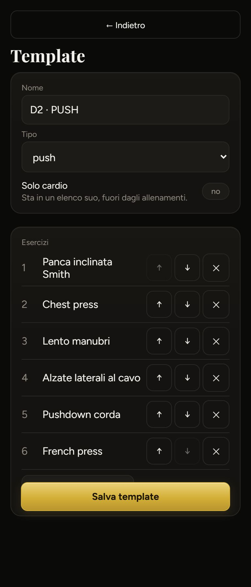
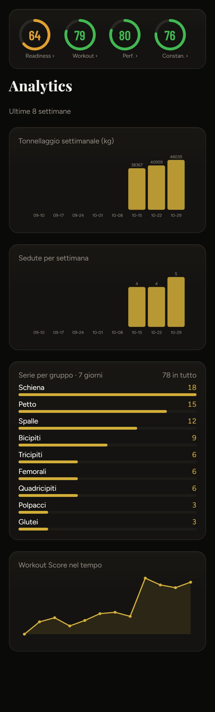

A sinistra com'è oggi (dati finti), a destra la proposta. Filo comune: l'app sa già quale seduta tocca (il ciclo D1…D5), quindi la mette davanti; le azioni rare (anteprima, modifica, elimina) vanno nel «⋯» invece di quattro bottoni per riga.
Oggi: due bottoni grandi uguali per tutti i giorni, poi tre chip e l'elenco esercizi. Proposta: in cima la seduta che tocca, con la striscia del ciclo come in Oggi; sotto Esercizi · Storico · Analisi come interruttore a tre.

Oggi: quattro bottoni per ogni scheda (👁 ♥ ✏ ✕), otto riquadri «Push / Pull / Legs…» e un «Continua» in fondo. Proposta: tocchi la scheda e parti; l’anteprima 👁 resta sulla riga, il resto nel «⋯». La seduta libera è una riga di chip.

Oggi: «← Indietro» largo, il tipo in un menu a tendina, tre bottoni ↑ ↓ ✕ per riga, il bottone «Salva» che copre l'ultimo campo. Proposta: barra «Annulla / Salva», tipo a chip, esercizi da trascinare, superset visibili.

Oggi: titolo in inglese («Analytics»), grafici con settimane vuote, numeri crudi (46035) senza confronto. Proposta: periodo a scelta, per ogni grafico il numero dell'ultima settimana e la variazione, serie per muscolo con la settimana precedente come riferimento.
